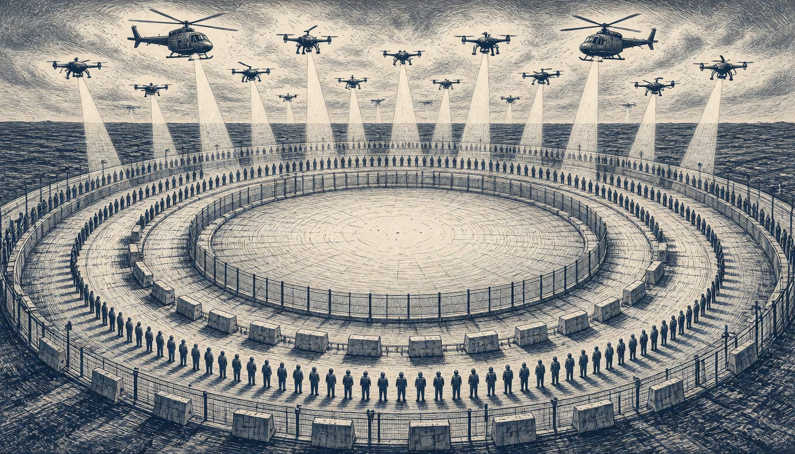

Garda call Dublin summit security operation largest in state's history
Mark Rutte joins up to 50 European leaders for the ninth European Political Community summit as officials brace for hoax threats and cyber attacks.

Mark Rutte, NATO Secretary General, lands in Dublin on 12 November for the ninth European Political Community summit. Bilateral talks are planned, including one with President Zelenskyy. An Garda Síochána calls the security operation for the meetings the largest it has undertaken in the history of the state. Jack Chambers says Ireland has "no intention of joining Nato, there's no plan to join Nato, there's no mandate to join Nato".
Garda Commissioner Justin Kelly said hoaxes and cyber attacks were expected, citing the war in Ukraine and Russia's grey zone tactics. In October 2026, the Dáil voted by a narrow margin to reform the Triple Lock, the system that requires UN approval, a Government decision and a Dáil vote before the deployment of more than 12 members of the Irish Defence Forces.
Mary Lou McDonald, leader of Sinn Féin, said Rutte's presence signals even closer alignment between the EU and the 32-member military and political alliance. Up to 50 European leaders and heads of European organisations gather there, in what the Irish Times calls the biggest event of Ireland's six-month presidency of the Council of the EU. An informal meeting of heads of state or government follows there on Friday. According to the Irish Times, the security operation for the presidency events this week will cost tens of millions.
The Garda operation runs from 10 to 13 November and will involve more than 15,000 twelve-hour tours of duty, the force has confirmed. Over 500 public order officers will be on duty each day of the summit itself. They will carry new flame retardant suits and body armour, and deploy more than 40 retrofitted patrol vehicles and water cannon. Commissioner Justin Kelly said gardaí, Ireland's police officers, are working with partners including Europol to trace those behind the hoax bomb threats. The question of who sent them remains open.
Superintendent Liam Geraghty put the scale plainly. "We have not seen a policing and security operation of this scale ever before in Ireland, this is bigger than a US presidential visit".